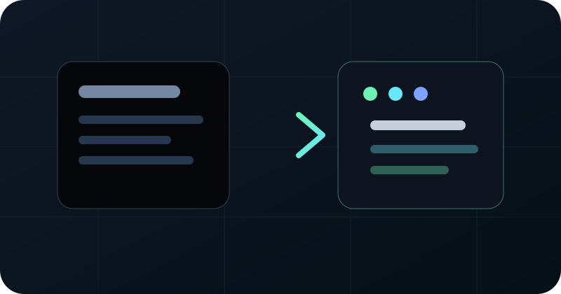
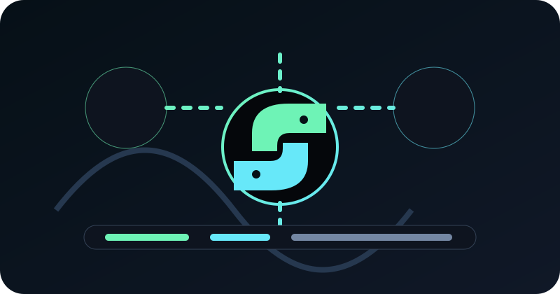
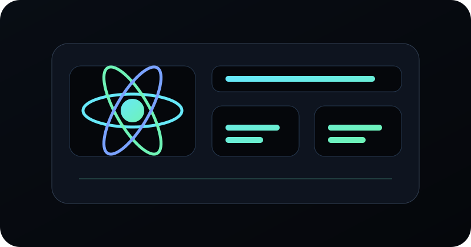
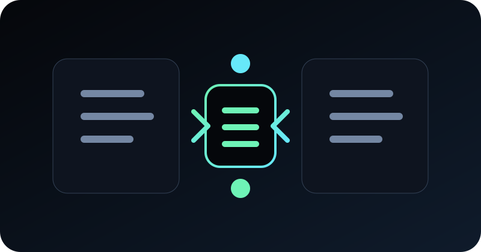
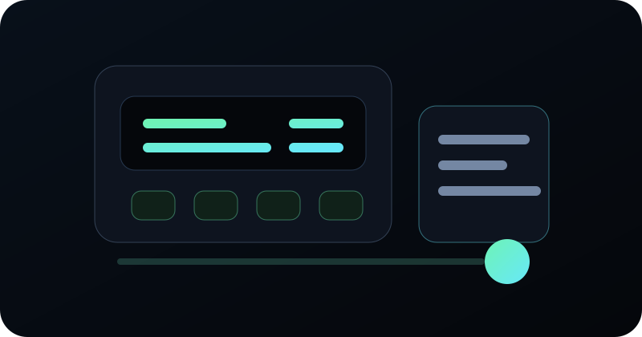
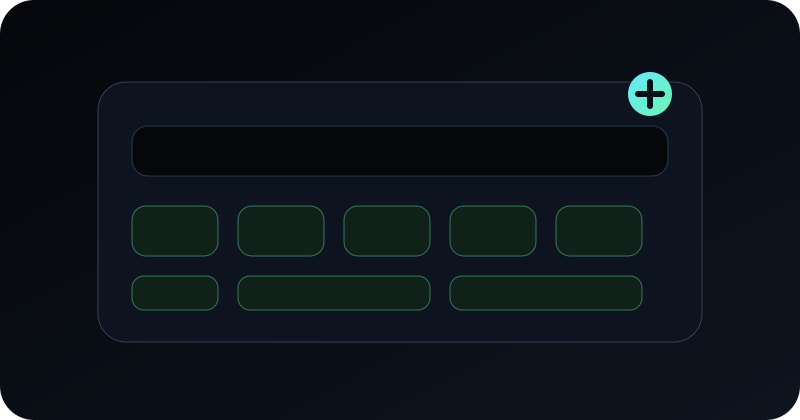

Artigos sobre desenvolvimento, automação, livros técnicos e produtos digitais.
Compartilho o que aprendo no dia a dia, os desafios que enfrento e as soluções que encontro, com foco em sistemas web, automações Python, React, Next.js, APIs REST, Clean Code, Hórus PDV e Plataforma de Reservas.
Código Limpo na prática
O que levei do livro para o dia a dia, o que aprimorei depois da leitura e onde a prática pede mais contexto do que regra fixa.
ler artigo →
Modernização de sistemas legados
Como evoluir sistemas antigos com menos risco, criando APIs, reorganizando regras e substituindo partes do frontend aos poucos.
ler artigo →
Automações Python
O que aprendi criando rotinas com Python para navegador, pesquisas, mensagens e tarefas repetitivas que pedem controle e responsabilidade.
ler artigo →
Desenvolvimento React e Next.js
Como estruturo interfaces modernas, componentes reutilizáveis, páginas performáticas e fluxos de uso claros.
ler artigo →
APIs REST com Node.js e .NET
Padrões para criar APIs previsíveis, seguras e fáceis de conectar com frontends React, sistemas legados e integrações externas.
ler artigo →
Hórus PDV
Uma visão sobre a modernização de um sistema de frente de caixa com React, API .NET, SQL Server e testes de fumaça.
ler artigo →
Plataforma de Reservas
Como uma plataforma para hotel, pousada, chalé e pet hotel organiza reservas, hóspedes, financeiro e operação.
ler artigo →